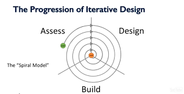
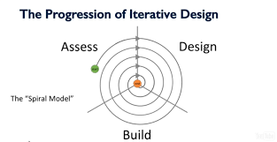

Informatik Noter
HTML er til at definere indholdet på en hjemmeside.
Her er et link:
https://www.w3schools.com/html/html_intro.asp
The Information Age:
Den begyndte omkring 1970, da den revolutionerende første computer kom til verdenen.
Den første computer gjorde det muligt at få "information" på en hel ny måde, den var meget
primitive i forhold til de computere vi kende i dag. Derfor kan informationsteknologi
bruges til at få information hurtigt og nemt, det gør det muligt for os at lære en masse
uden brug af bøger og andet primitivt
Noter til kode
Head: bruges til at lave en form for title på en hjemmeside
Body: bruges til at lave det grundlæggende indhold i en hjemmeside
Style css: bruges til at lave om på forskellige ting f.eks. farver hvor billeder skal være osv. simpel CSS bruges til at ændre størrelse, farve og position på HTML elementer.
Ved hjælp af koden "src" kan du søge efter forskellige ting i din kode og derefter vælge
Det, jeg bruger det til at søge efter billeder i min kode ved at sige img src
Javascript er med til at gøre indholdet i en hjemmeside interaktiv det kan ændre inholdet i et html dokument
Href refere til et link som man så kan ændre eller navngive og a gør det så muligt at lave det her href
Ved at sige "let" i ens javascript dokument kan man gøre en masse ting, det jeg har brugt den mest til er at definere
De forskellige fag ved at sige "let subject1=Bio"
Jeg har brugt koden br til at lave afsnit for at gøre min side pænere og mere overskuelig
Jeg har brugt koden "random" og "math random til at lave et sjovt stykke arbejde i et af mine html dokumenter"
Informatik Projekter
Logbog dag 1:
Vi har fået brainstorme og er kommet op med flere emner: Et lektiespil, et ordenssystem der sorterer ens noter, t kommunikationssystem der kan forbinde elever fra andre skoler for at få lektiehjælp, et system hvor man kan stemme på ugens ret i kantinen. Vi har lært om spiralmodellen hvilket forklarer fremgangsmetoden igennem projektet. Vi har valgt det faglige spil, det handler om 3 fag, engelsk, tysk og matematik. Det er et point baseret spil, hver gang du klarer en bane, bliver du belønnet med in-game items til dit hus. Jo længere du kommer frem i spillet jo bedre belønninger. Man kan vælge mellem 4 forskellige ting at bygge, et hus, hospital, krigszone, og restaurant. -
 

Logbog dag 2: vores primære målgruppe er unge, der er trætte af den måde der bliver undervist på. Vi laver et Progress baseret spil hvilket skal. Vores mål er at gøre undervisningen mere interessant, og gøre frikvartererne mere interessante.
Søren han er 12 år, han har problemer med at følge med i skolen, og her for tiden er han begyndt at sakke bagud. I skolen har han matematik, dansk, tysk og engelsk han syntes at matematik er vildt kedeligt, og han mangler noget til at motiverer ham. Han synes heller ikke at, det er sjovt at følge med i sprogtimerne derfor sidder Søren bare og spiller på hans computer.
Dag 3:
Vi snakkede videre om hvordan sketchen skulle se ud. I morgen skal vi få tegnet sketchen, og mere informationer i bogormen. Vi tænkt os og tegn det først på en planche og designe det.
.
Dag 4:
I dag vi har tegnet vores skitse færdigt og bestemt hvordan skal den være. Næste dag vil vi putte den ind i Marvel så vi får et bedre overblik over flowet igennem appen.
Dag 5:
I dag har vi lavet buildfasen hvor vi har lavet en marvel prototype for at vise flowet igennem appen. Næste gang vil vi brugerteste og forberede til at fremlægge.
Dag 6: i dag har vi forberedt til fremlæggelsen, og brugertestet, ud fra vores brugertest fandt vi ud af at der var nogle steder hvor det var lidt svært at navigere rundt specielt når man skulle komme videre fra den valgte bygtning.